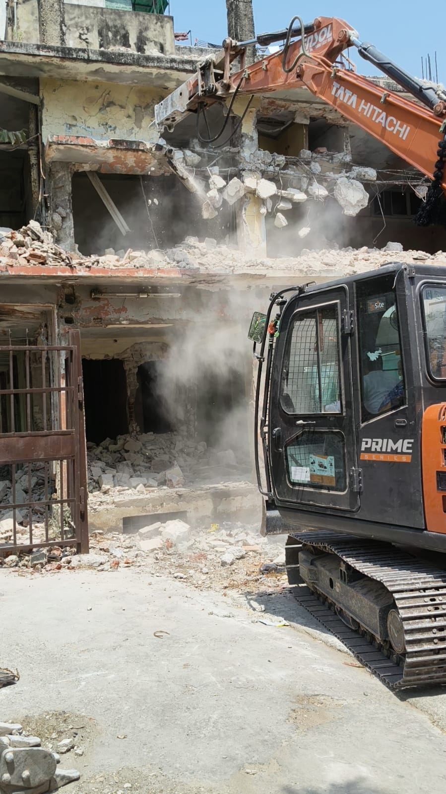
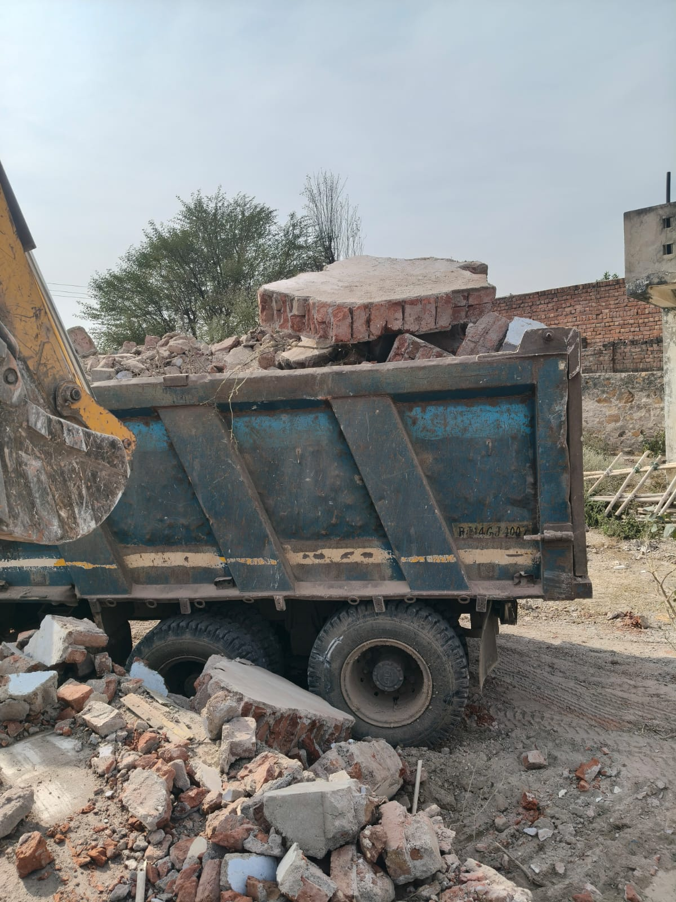
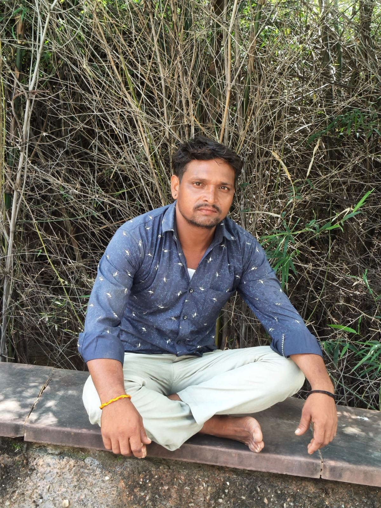

मकान और बिल्डिंग तोड़ना
पुराने मकान या बिल्डिंग को तोड़ने के काम के लिए साइट और ज़रूरत पर चर्चा करें।
DEMOLITION WORKतुड़ाई · खुदाई · अर्थिंग
भंवर लाल बंजारा से सीधे बात करें। मकान व बिल्डिंग तोड़ना, मलबा हटाना, प्लॉट और बेसमेंट की खुदाई और कॉपर प्लेट अर्थिंग। आपके काम की ज़रूरत के हिसाब से मशीन और व्यवस्था।
House demolition & building demolition in Jaipur
कॉल: 78786 73630 · WhatsApp: 96804 78850

हमारे काम की असली तस्वीर · और देखें ↗हमारे काम
छोटा प्लॉट हो या निर्माण का काम—
अपनी ज़रूरत बताकर बात शुरू करें।
पुराने मकान या बिल्डिंग को तोड़ने के काम के लिए साइट और ज़रूरत पर चर्चा करें।
DEMOLITION WORKप्लॉट की खुदाई, ज़मीन समतल करना और बेसमेंट के लिए खुदाई का काम।
PLOT & BASEMENT EXCAVATIONतोड़-फोड़ के बाद मलबा हटाने और मलबा खरीदने के लिए संपर्क करें।
DEBRIS REMOVAL & SALEसड़क से जुड़े खुदाई के काम के लिए जगह, काम की जानकारी और समय बताएँ।
ROAD EXCAVATIONज़मीन के नीचे होने वाले काम के लिए ज़रूरत के अनुसार खुदाई की व्यवस्था।
UNDERGROUND EXCAVATIONज़मीन के नीचे कॉपर प्लेट लगाने वाली इलेक्ट्रिकल अर्थिंग के काम के लिए बात करें।
COPPER PLATE EARTHINGकाम की जानकारी
मकान मालिक, बिल्डर और ठेकेदार अपने काम की जगह और ज़रूरत बताकर भंवर लाल जी से संपर्क कर सकते हैं।
☎ काम और खर्च की जानकारी के लिए कॉल करेंBhawar Lal Banjara provides house and building demolition services in Jaipur, with 10 years of experience in demolition and debris-related work. Services also include debris removal and sale, plot and basement excavation, road and underground excavation, and copper plate electrical earthing.
Work is available across Jaipur, including Sitapura, Jagatpura, Pratap Nagar, Malviya Nagar, Sanganer and Patrakar Colony. Depending on the job, equipment includes owned or hired JCBs, excavators, dumpers and tractor-trolleys.
To discuss a demolition or excavation quote, share the site location, photos or videos, the work required and your preferred timing. The equipment, scope and price depend on the site. View actual work photos and videos, or send your site details on WhatsApp.
साइट से सीधे
भंवर लाल जी के काम की फोटो और वीडियो।
वीडियो देखने के लिए प्ले बटन दबाएँ।


आपके काम के लिए, सीधा संपर्क
जयपुर में तुड़ाई और मलबे से जुड़े कामों का 10 साल का अनुभव। मकान मालिकों, बिल्डरों और ठेकेदारों के काम के लिए संपर्क करें।
काम की ज़रूरत के अनुसार अपनी और किराये की JCB, खुदाई की मशीन, डम्पर व ट्रैक्टर-ट्रॉली का उपयोग किया जाता है। कौन-सी मशीन लगेगी और काम कैसे होगा, यह साइट के हिसाब से तय किया जाता है।
Google Maps पर B.R house demolition देखें ↗
हम कहाँ काम करते हैं
इन इलाकों के साथ पूरे जयपुर में काम के लिए संपर्क करें।
आपके सवाल
खर्च बिल्डिंग के आकार, मंज़िलों, साइट तक मशीन पहुँचने की जगह और मलबा हटाने की ज़रूरत पर निर्भर करता है। सही जानकारी के लिए लोकेशन और साइट की फोटो या वीडियो भेजें, फिर काम और खर्च पर बात करें।
हाँ, मलबा हटाने और बेचने का काम भी किया जाता है। मलबे की मात्रा और साइट की पहुँच के हिसाब से डम्पर या ट्रैक्टर-ट्रॉली की व्यवस्था पर बात करें। काम तय करते समय मलबा हटाने का दायरा और खर्च भी स्पष्ट कर लें।
हाँ, प्लॉट और बेसमेंट की खुदाई, ज़मीन समतल करने, सड़क और अंडरग्राउंड खुदाई के लिए संपर्क कर सकते हैं। काम की जगह और ज़रूरत के हिसाब से मशीन तय की जाती है।
सीतापुरा, जगतपुरा, प्रताप नगर, मालवीय नगर, सांगानेर, पत्रकार कॉलोनी और जयपुर के अन्य इलाकों में काम के लिए संपर्क करें। अपनी लोकेशन और काम कब करवाना है, यह बताकर उपलब्धता पूछें।
साइट की लोकेशन, फोटो या वीडियो, क्या काम करवाना है और कब करवाना है—ये जानकारी WhatsApp पर 96804 78850 पर भेजें। सीधे बात करने के लिए 78786 73630 पर कॉल करें।
चलिए, आपके काम की बात करें
WhatsApp पर साइट की फोटो या वीडियो और लोकेशन भी भेज सकते हैं।